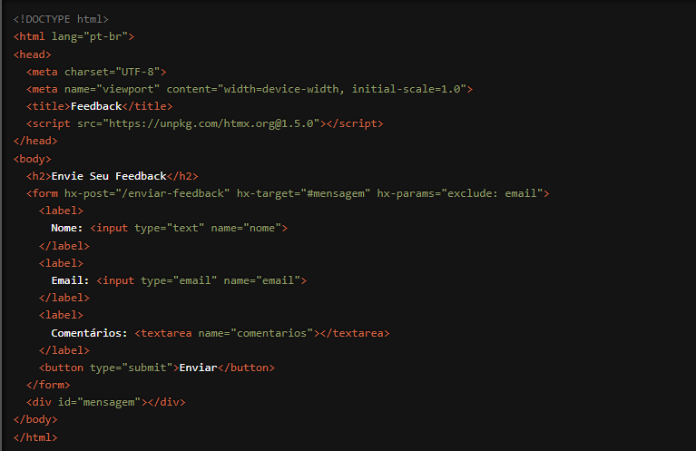

Estamos animados para compartilhar com você uma funcionalidade poderosa e flexível do HTMX que oferece um controle refinado sobre os parâmetros enviados nas requisições HTTP: o atributo `hx-params`. Com `hx-params`, você pode especificar exatamente quais parâmetros devem ser incluídos ou excluídos na requisição, proporcionando uma maior precisão e personalização nas interações do usuário com sua aplicação. Vamos explorar como essa funcionalidade pode elevar o nível das suas aplicações web.
O que é o atributo `hx-params`?
O `hx-params` é um atributo do HTMX que permite controlar quais parâmetros de um formulário
serão incluídos na requisição HTTP. Isso é especialmente útil quando você deseja enviar apenas um
subconjunto dos dados do formulário ou excluir determinados parâmetros das requisições. O `hx-
params` pode ser configurado para incluir ou excluir parâmetros específicos, oferecendo uma
grande flexibilidade.
Como Funciona?
Vamos ver um exemplo prático para entender melhor como o `hx-params` pode ser usado. Suponha
que você tenha um formulário de pesquisa com vários campos, mas deseja enviar apenas alguns
deles na requisição:

Neste exemplo, quando o formulário de feedback é submetido, o parâmetro `email` é excluído da requisição HTTP POST para a URL "/enviar-feedback", graças ao atributo `hx-params` configurado com `exclude: email`. Apenas os parâmetros `nome` e `comentarios` são enviados na requisição.